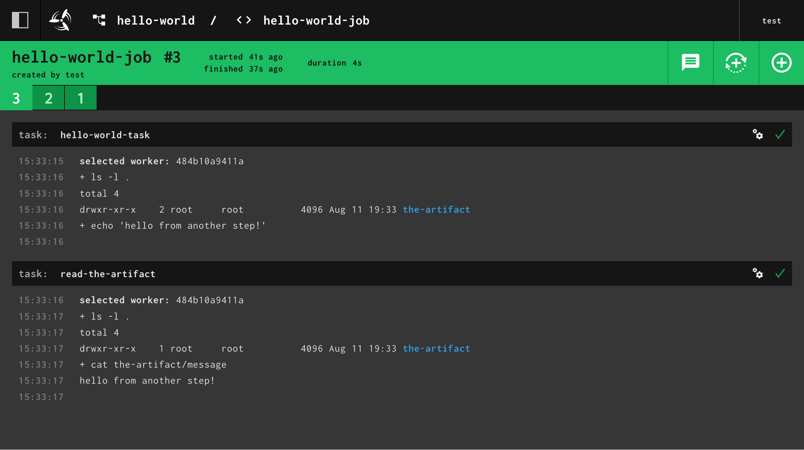

Inputs and Outputs
Overview
This section is going to go over how to pass data between different steps in
a job. We'll continue building on our hello-world.yml pipeline.
In the previous section we learned that steps are where we tell Concourse what to
run (i.e. run my tests, run this bash script, build this image, etc.). We are going to expand on the concept
of steps and show you how to pass artifacts/files
between tasks using inputs and outputs.
What are inputs and outputs
The simple answer is that inputs and outputs are directories that get passed between steps. We'll refer to both inputs and outputs as artifacts.
Let's start exploring how artifacts work by adding
a task-config.outputs to our hello-world-task.
jobs:
- name: hello-world-job
plan:
- task: hello-world-task
config:
platform: linux
image_resource:
type: registry-image
source:
repository: busybox
tag: latest
# Adds a "the-artifact" directory to our task
outputs:
- name: the-artifact
run:
# Change the command to `ls -lF` to see
# what the task sees in its working directory
path: ls
args: [ "-lF" ]
Update the pipeline and trigger the job:
$ fly -t tutorial set-pipeline -p hello-world -c hello-world.yml
$ fly -t tutorial trigger-job --job hello-world/hello-world-job --watch
...
selected worker: 57d7419112ca
running ls -lF
total 4
drwxr-xr-x 2 root root 4096 Apr 8 16:42 the-artifact/
succeeded
We can see that in the task's current working directory there is now
a folder called the-artifact. Concourse makes output directories for you and will pass any contents inside the folder
onto later steps. Let's see how that works next.
Passing outputs to another task
To pass artifacts from one task to another, the first task must declare an output. The second task must then declare an input with the exact same name. Let's update the pipeline to do the following:
- Have the first task create a file inside
the-artifact - Create a second task to read the file inside
the-artifactfrom the previous step
jobs:
- name: hello-world-job
plan:
- task: hello-world-task
config:
platform: linux
image_resource: &image # Declaring a YAML anchor
type: registry-image
source:
repository: busybox
tag: latest
outputs:
- name: the-artifact
run:
# This is a neat way of embedding a script into a task
path: sh
args:
- -cx
- |
ls -l .
echo "hello from another step!" > the-artifact/message
# Add a second task that reads the contents of the-artifact/message
- task: read-the-artifact
config:
platform: linux
image_resource: *image
# To receive "the-artifact", specify it as an input
inputs:
- name: the-artifact
run:
path: sh
args:
- -cx
- |
ls -l .
cat the-artifact/message
Update the pipeline and trigger the job:
$ fly -t tutorial set-pipeline -p hello-world -c hello-world.yml
$ fly -t tutorial trigger-job --job hello-world/hello-world-job --watch
initializing
selected worker: 57d7419112ca
running sh -cx ls -l .
echo "hello from another step!" > the-artifact/message
+ ls -l .
total 4
drwxr-xr-x 2 root root 4096 Feb 26 19:09 the-artifact
+ echo 'hello from another step!'
initializing
selected worker: 57d7419112ca
running sh -cx ls -l .
cat the-artifact/message
+ ls -l .
total 4
drwxr-xr-x 1 root root 4096 Feb 26 19:09 the-artifact
+ cat the-artifact/message
hello from another step!
succeeded
It's a bit hard to see when the first task stops and the second one starts in the terminal. Looking at the build from the web UI makes this clearer:

With the above pipeline we can see that the file made in the first step is made available in the second step via
the the-artifact.
How does Concourse track artifacts?
As Concourse is running the steps in your job, it is creating a list of named artifacts. Let's see what that looks like for the pipeline we just ran.
- Concourse runs the task step
hello-world-taskwith outputthe-artifact
Concourse creates an empty artifact, assigns it the name the-artifact, and mounts it inside the task container.
- Concourse runs the task step
read-the-artifactwith inputthe-artifact
Concourse looks up, in its list of artifacts for the build, for an artifact named the-artifact, and mounts
it inside the task container. If no input with that name is found then the build would fail.
The next section will introduce you to the concept of Resources.
Note
If you have any feedback for this tutorial please share it in this GitHub discussion.